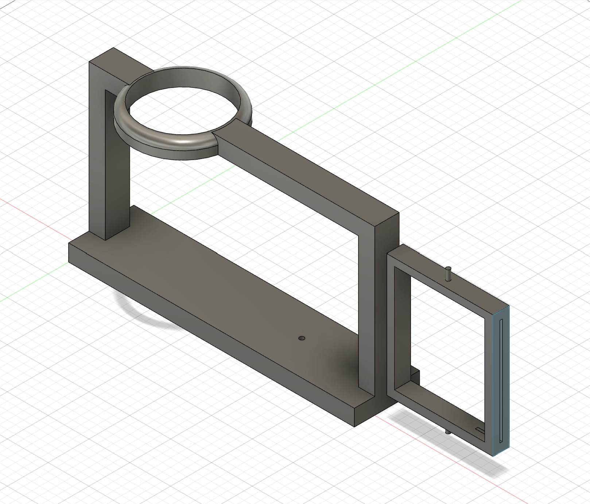
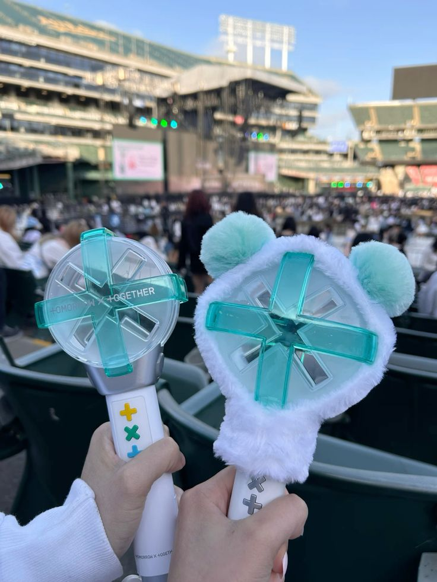
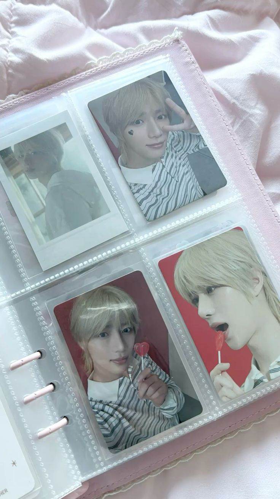

<!DOCTYPE html>
<html lang="jp"></html>
<head>
    <title>ペンライトと写真立て♡♡</title>
</head>
<body>
    <h1>お家で推し活！</h1>
    <h2>ペンライトとトレカとか写真を飾りたい！</h2>
    <h3>構図</h3>
    <br>
    <h3>完成品の動画…は後ほど！</h3>
    <div>制作間に合いませんでした…</div>
    <a href="https://youtube.com/shorts/ogSerpSXyT0?si=vS-p4fCrcxn5LlWr"target="_blank">途中経過</a>
    <h3>こんな風に使うよ！</h3>
    <br>
    <br>
    <div>こんな感じのペンライトを立てたり、トレカやチェキ、小さめの写真などを2枚いれて</div>
    <div>写真を回転させられるものを考えました！</div>
    <div>推し活にももちろん最適ですが、思い出の写真とお花などを飾ってもかわいいと思います！</div>
    <h3>改善点・反省</h3>
    <div>今回は、アルバムなどに入ってるトレカなどを一緒に飾れるモノを作ったのですが</div>
    <div>普通のノーマル写真などが入る大きさで、ペンライトではなく花瓶などを入れて、お花を飾るなど</div>
    <div>いろいろな用途で使えるものにもできる！</div>
    <div>UVなどで作って色などを加えてもかわいいかも</div>
    <div>反省点は、動画まで間に合わなかったので、計画的に進めたい。</div>
</body>